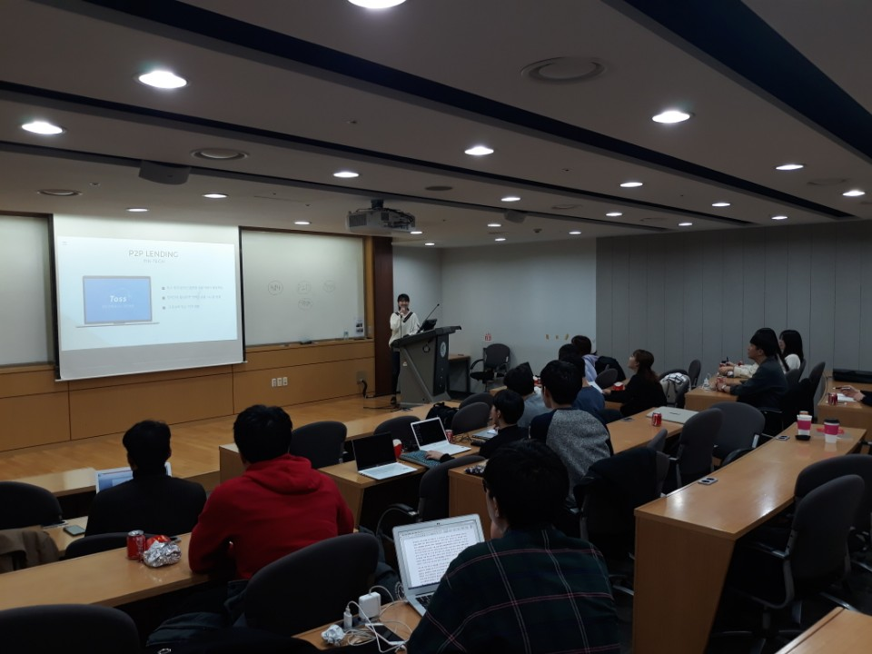

ABOUT US
About GLIF.
GLIF (Global Leaders in Finance, 글리프)는 성균관 대학교 글로벌 경제학과 최초의 금융학회입니다.
GLIF의 설립 목적은 크게 두 가지 입니다.
첫 번째, 실무적 금융지식을 갖춘 Finance Expert를 양성하는 것.
두 번째, 글로벌 경제학과 출신 금융인들의 Network의 장이 되는 것 입니다.
GLIF의 창립 맴버들은 금융권 구직 과정이 일반적인 대기업이나 공기업과 상당히 다르다는 점을 경험했습니다. 외국계 은행, 증권사, 국내 증권사의 Front Office 등 많은 금융권 희망자들이 원하는 포지션의 경우에는 그들만의 리그라고 할 정도로 폐쇄적인 특성을 가지고 있습니다. 지원하고자 하는 사람은 많지만, 지원 공고조차 받지 못하는 경우도 많고, 설령 공고를 보았다 하더라도 무엇을 준비해야 합격할 수 있는지 정보가 없습니다.
그런 상황에서 수많은 실패 경험을 통해 나름의 노하우와 지식을 얻게 된 현 멤버들은 후배, 동기들에게 자신이 걸었던 길 보다 좀 더 효율적인 길, 바른 길을 제시하고자 합니다. 이에 GLIF는 각각의 학회원이 원하는 금융권으로 진출할 수 있는 종합 패키지를 제공해, 금융권 진출의 확률을 높이고자 출범하게 되었습니다.
Curriculums.
GLIF의 커리큘럼은 실무적 금융지식을 갖춘 준비된 Financial Expert를 양성하는데 초점을 맞추고 있습니다. 이에 따라 Main Session과 강연이라는 2가지 활동을 기반으로 다양한 활동을 기획, 수행하고 있습니다.
-

Daily Market Summary
Daily market summary의 경우 금융권 종사자들이 관심있게 구독하는 Wall Street Journal과 Financial Times, Bloomberg의 기사들을 선별해 번역 및 요약하는 활동과, 연합인포맥스의 시황(미국, 유럽, 아시아 시장의 Equity, Bond, Currency, Commodity 관련 정보) 기사들을 종합하고 요약해 간단한 분석과 당일 시장 전망을 직접 작성하는 활동을 할당해 주기적으로 돌아가며 작성하게 됩니다. 작성된 자료는 GLIF의 금융권 현직자 선배들과 운영진들에게 공유되며 즉각적인 Daily Feedback을 받게 됩니다. 이렇게 매일 Global Market을 follow-up해서 얻은 지식은 학회원들을 여타 경쟁자와 차별화하는 지식이 될 것입니다. -

In-depth Analysis
Weekly In-depth presentation은 격주 금요일(시험기간 제외) 마다 진행되는 활동입니다. 현직자들이 조별로 발표할 주제와 관련 기사를 지정해주면 각 조별로 주제에 대해 심도있는 리서치와 공부를 해서 세션 시간에 발표를 하고 현직자 패널과 학회원들과 함께 토론을 하게 됩니다. -

GLIFER 초청 강연
매주 다양한 금융권에 종사하고 있는 GLIFer들을 직접 초청해 그들이 종사하는 분야에 대한 설명과 입사 준비과정, 필요한 지식 등에 대한 강의 및 멘토링을 진행하고 Mock Interview의 기회도 제공합니다. 현재 총 약 20명의 GLIFer들은 외국계 은행, 증권사, 자산운용사, PE, 금융공기업, 대기업 재무팀 등 다양한 분야에 진출해 활발히 활동하고 있습니다. 강연을 통해 학회원들은 선배들이 진출해 있는 분야로 진입하기 위해 필수적인 정보들을 얻을 수 있음과 동시에 가장 소중한 Network 형성의 기회를 얻게 됩니다. 실제로 많은 GLIFer들이 이런 Network의 중요성을 입사 과정에서 절실히 느꼈고 이 것이 GLIF를 결성하게 된 중요한 계기가 되었습니다.
GLIF with Samsung Securities.
2019년 1학기부터 GLIF는 국내 자본시장을 선도하는 삼성증권(Samsung Securities)사와 함께 학회활동을 함께하게 되었습니다.
1. 임원진 및 실무자특강
2. 멘토의 정기 세션참관 및 피드백
3. 공채 시즌 취업 Mentoring 의 분야 및,
학회 연계과제 부여, 인턴활동 기회 등,
금융권으로의 첫 발을 내딛기를 소망하는 GLIF 학회원들에게 소중한 기회를 제공합니다.